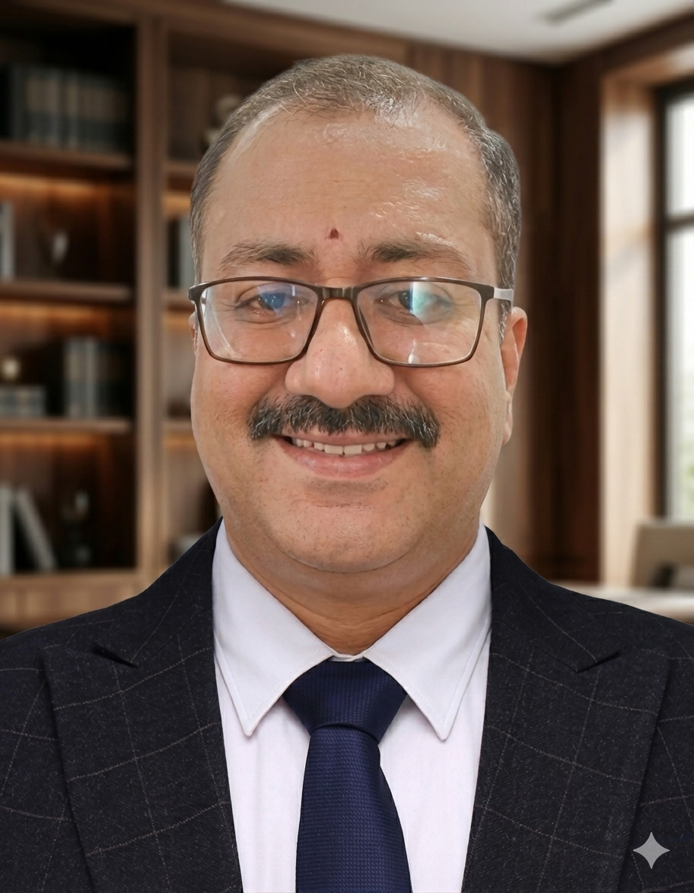

Mathematician · Researcher · Educator
Professor of Mathematics at SASTRA Deemed University with 25 years of academic experience — specialising in algorithmic graph theory, combinatorial optimisation, numerical methods and wavelet approximation.

Selected Works
Thirty-nine peer-reviewed publications spanning graph optimisation, swarm intelligence, fractional calculus and wavelet approximation — with 965 citations, an h-index of 17 and an i10-index of 23.
2026 · National Academy Science Letters (Springer) · IF 1.4
Devi, V. & Balaji, S. — Introduces the JSCP algorithm for the Airline Crew Pairing Problem, a complex combinatorial optimisation task aimed at minimising costs under regulatory constraints, achieving improved cost efficiency, faster execution and proven scalability over existing methods.
2026 · IEEE InCoWoCo · IEEE Xplore
Maheswari, G. & Balaji, S. — Combines particle swarm optimisation with a three-phase local search to efficiently explore the solution space of the Minimum Dominating Set problem, with applications across network design and data analysis. Presented at the IEEE 2nd International Conference for Women in Computing.
2025 · Evolving Systems (Springer) · IF 2.7
Maheswari, G. & Balaji, S. — Proposes a discrete swarm optimisation-based local search algorithm for the Minimum Weighted Dominating Set problem, with applications in network design and communications, effectively exploring the solution space to avoid local optima.
2025 · Discrete Math., Algorithms & Applications
Maheswari, G., Balaji, S., Revathi, N. & Nithyakala, R. — Extends the jumping particle swarm framework to the Maximum Weighted Independent Set problem, one of the classical NP-hard problems in graph theory, with a local search refinement stage that improves solution quality on benchmark instances.
2024 · Math. Methods in the Applied Sciences · IF 2.9
Balaji, S. & Hariharan, G. — An operational matrix approach for solving nonlinear fractional-time long wave equations using wavelet-based methods, contributing to numerical analysis and fractional calculus.
2023 · Symmetry (MDPI)
Vikram, S.T. & Balaji, S. — Characterises how graph inflation operations affect the strong chromatic index across standard graph families, establishing exact bounds for inflated paths, stars and cycles. Part of a sustained programme on strong edge colouring.
2021 · Int. J. Bio-Inspired Computation · IF 3.5
Balaji, S., Vikram, S.T. & Kanagasabapathy, G. — Introduces the JPSO method as a metaheuristic approach to the NP-hard minimum weight vertex cover problem, demonstrating superior performance over conventional methods.
2016 · Natural Computing (Springer)
Revathi, N. & Balaji, S. — The founding paper of the jumping particle swarm line of work, applying the method to the Set Covering Problem and establishing the algorithmic template later extended to vertex cover, dominating set and crew pairing.
2016 · J. Computational & Nonlinear Dynamics (ASME) · IF 1.8
Balaji, S. — Develops a Bernoulli wavelet operational matrix of derivatives for the nonlinear singular Lane–Emden equations arising in astrophysics, converting the differential system into an algebraic one solvable with high accuracy.
2014 · Ain Shams Engineering Journal · IF 5.9
Balaji, S. — A single-author contribution presenting a unified wavelet-based scheme for Duffing equations with mixed forcing terms, among the most-cited papers in the author's numerical analysis portfolio.
2024–2025 · Funded Project · SASTRA-TRR Research Fund
Principal Investigator (Feb 2024 – Feb 2025), funded at ₹1,59,000. Completed successfully with three SCIE journal publications. Introduced the JPWCV algorithm, contributing to WANETs and graph optimisation.
2012–2025 · Doctoral Supervision · SASTRA Deemed University
Two doctorates awarded — Dr. S.T. Vikram (2024, strong chromatic index of graphs derived from paths, stars and cycles) and Dr. N. Revathi (2025, jumping particle swarm heuristics for graph optimisation). Two scholars in progress, plus 45 supervised M.Sc. projects in data science and mathematics since 2015.
For Students
Lecture notes, question papers, solutions and reference material, organised by semester. Choose a semester below and download what you need — everything is free and openly available.
Materials are provided for the academic use of SASTRA students and are shared in good faith for learning purposes.
Spotted a broken link or a missing file? Write to drbalajimath@gmail.com.
What's New
Invited Lecture: "AI as Teaching Assistant — Practical Experiments in AI-Enhanced Pedagogy"
Presented at the Second TLC Symposium, SASTRA Deemed University. Explored hands-on experiments in integrating AI tools as pedagogical assistants in mathematics education.
AI-Enhanced Curriculum: B.Sc. / M.Sc. Mathematics & Data Science — SASTRA–Zoho Initiative
Framed a new AI-enhanced curriculum for B.Sc. and M.Sc. Mathematics and Data Science courses under SASTRA University as part of the Zoho initiative on Building Mathematical Foundations for Modern AI.
Elite + Silver Grade — NPTEL/IIT Kanpur: AI in Industrial & Management Engineering
Secured Elite + Silver grade in the proctored examination of the NPTEL-AICTE Faculty Development Programme conducted by IIT Kanpur (Aug–Oct 2025).
Workshop Lecture: "AI in Mathematics — Ideas to Experiment in 2025–26"
Presented at the Workshop on Synergistic Learning of Mathematics for Engineering Programme Students, SASTRA Deemed University.
New Publication: "A Swarm Intelligence Technique for Link Monitoring Problems in Wireless Ad Hoc Networks"
Maheswari, G. & Balaji, S. Published in National Academy Science Letters, Vol. 48, pp. 613–618.
Transforming Science through Data-Driven Models
Theme: "Scientific Machine Learning in Ocean Engineering." Delivered a hands-on session for data implementation and analysis using Google Colab.
Best Paper Award — IEEE ICACCS 2023, Coimbatore
Received the Best Paper Award at the IEEE 9th International Conference on Advanced Computing and Communication Systems for the paper on Data Compression Techniques for Biomedical Signals.
A Continuing Journey
Learning, creating and innovating — a record of how artificial intelligence has entered my teaching, research and everyday academic practice.
Apps & Software Tools Built
Three applications developed with AI assistance. SASTRA Mentor Connect — a student mentoring platform. Resume Analyzer — compares a student's résumé against a job description and highlights missing keywords and skills. This website — a web platform presenting my academic and research journey.
Certifications & FDPs
NPTEL-AICTE FDP — AI in Industrial & Management Engineering (IIT Kanpur, Elite + Silver, Aug–Oct 2025). ChatGPT & AI Hacks with MS Office — Microsoft Certified Training (Feb 2024). AICTE-ATAL FDPs in Financial Mathematics & Machine Learning and in Big Data & Analytics (2021).
AI-Enhanced Curricula
Designed AI-integrated syllabi for B.Tech (ECE) V Semester — Probability and Random Processes (July 2025), and for B.Sc./M.Sc. Mathematics & Data Science under the SASTRA–Zoho initiative on Building Mathematical Foundations for Modern AI (Dec 2025).
AI Research Papers
Three papers currently under review in SCIE journals: An AI-Driven Interactive Interface for Interview Excellence; Rainfall Forecasting Using Machine Learning and Time Series Models; and Enhanced Rainfall Prediction using Machine Learning and Actionable Insights.
AI Project Supervision
Supervised 20 M.Sc. Data Science projects (2020–2025) and 25 Integrated M.Sc. Mathematics projects (2015–2025) — covering drug–target interaction prediction, traffic accident prevention, spam and fake news detection, Alzheimer's prediction, weather forecasting and agroclimatic clustering for crop yield.
Classroom AI Integration
Active use of Google Colab and Desmos for classroom teaching and live demonstration. Use of Keptune, ChatGPT and Claude for school result analyses and academic data-driven insights.
Invited AI Lectures
Lectures at SASTRA University on Data-Driven Models in Ocean Engineering (Jan 2025), AI in Mathematics — Ideas to Experiment in 2025–26 (July 2025) and AI as Teaching Assistant (Jan 2026) — a sustained commitment to integrating AI into academic practice.
Toolkit & Technical Base
Programming in MATLAB, C, C++ and LaTeX, extended with Python-based AI/ML workflows in Google Colab. Research practice built on mathematical modelling, algorithmic design and data analysis — now routinely paired with AI-assisted exploration and code generation.
What Comes Next
The journey is still counting. Priorities ahead: integrating AI and data science more deeply into traditional mathematics curricula, expanding research impact through collaborative networks and external funding, and bridging academic research with industry applications in algorithmic mathematics.
Ideas & Essays
What does it mean for a mathematician to invite AI into the classroom — not as a novelty, but as a genuine pedagogical collaborator? In this session at SASTRA's Second TLC Symposium, I shared hands-on experiments in using AI tools to transform how mathematics is taught, assessed and experienced by students.
Read MoreWho I Am
I'm Dr. S. Balaji, Professor of Mathematics at SASTRA Deemed University, Thanjavur, Tamil Nadu — where I have served continuously for over 21 years. I hold a Ph.D. in Mathematics from SASTRA (2012), with a thesis on "Effective Heuristics on Graph Optimization Problems" selected in the pool of best theses.
My research spans algorithmic graph theory, combinatorial optimisation, numerical methods and wavelet approximation. With 39 publications, an h-index of 17, an i10-index of 23 and over 965 citations, I have contributed across graph optimisation, swarm intelligence, fractional calculus and bio-inspired computing.
I supervise doctoral scholars — two Ph.D.s awarded and two ongoing — as well as 45 M.Sc. projects in data science, machine learning and graph optimisation. I am a peer reviewer for Elsevier, Springer, Taylor & Francis and Hindawi, and serve as a Ph.D. External Examiner for Bharathiyar University.
Beyond research, I actively integrate AI and data science into mathematics education, having developed two AI-powered student apps, designed AI-enhanced curricula, and earned an Elite + Silver grade in IIT Kanpur's AI FDP.